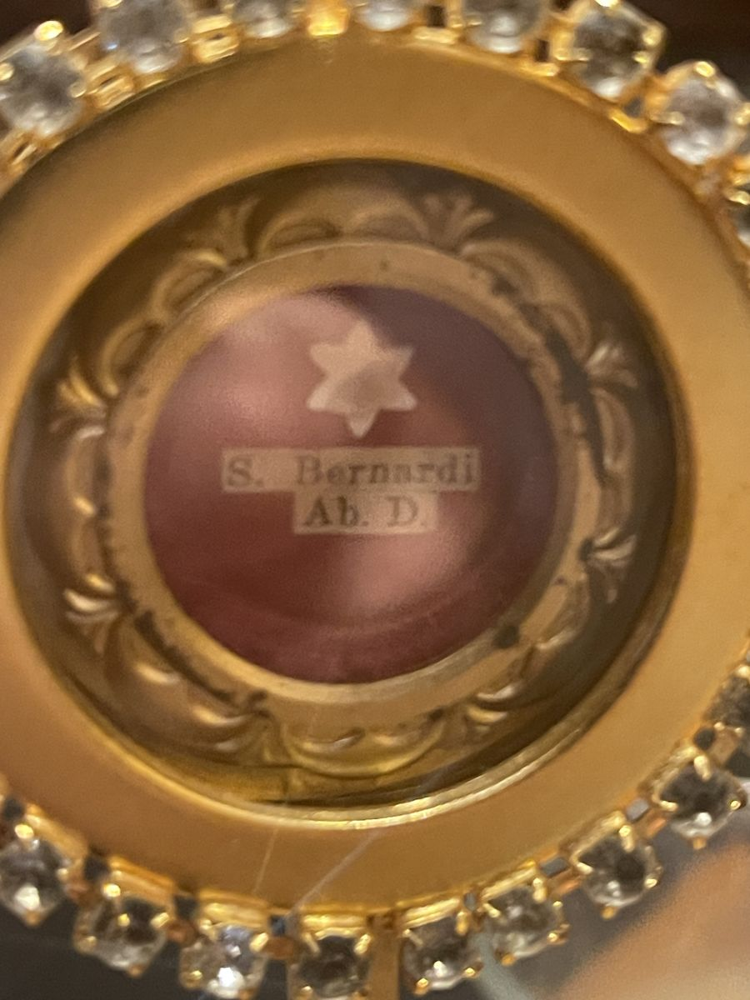
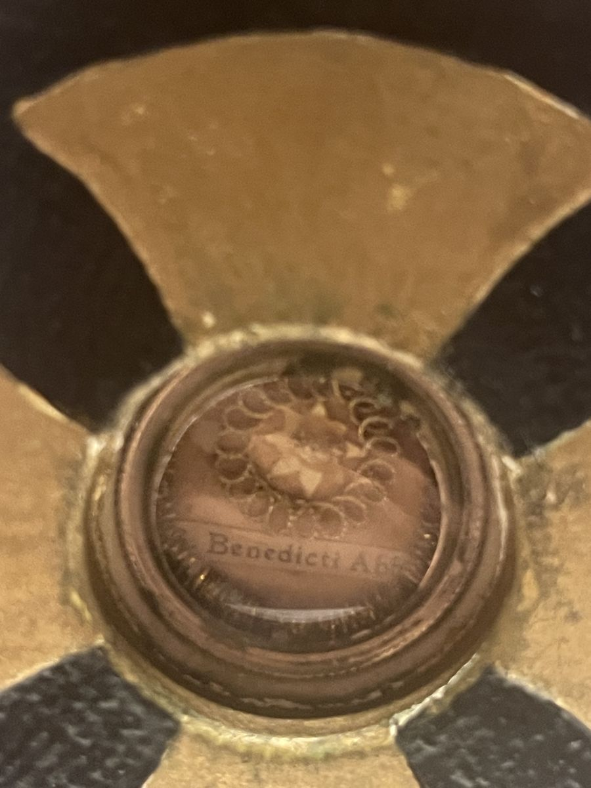
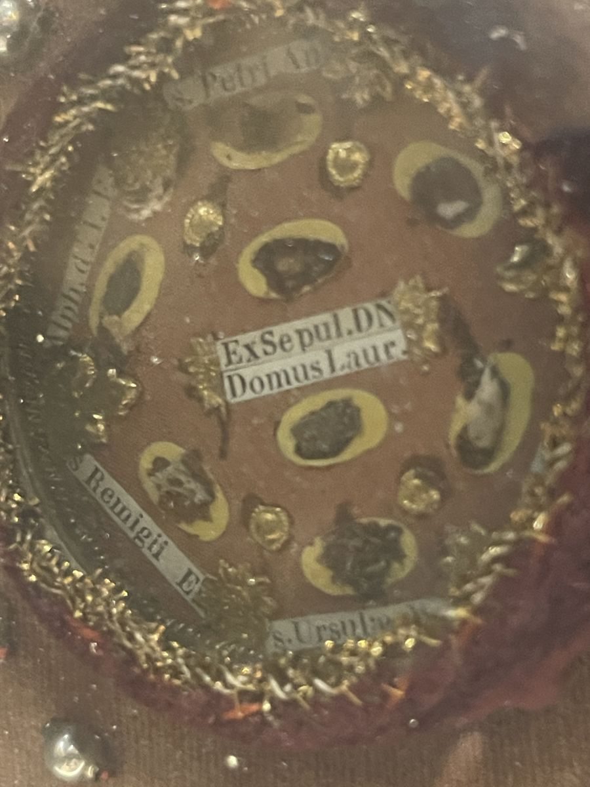
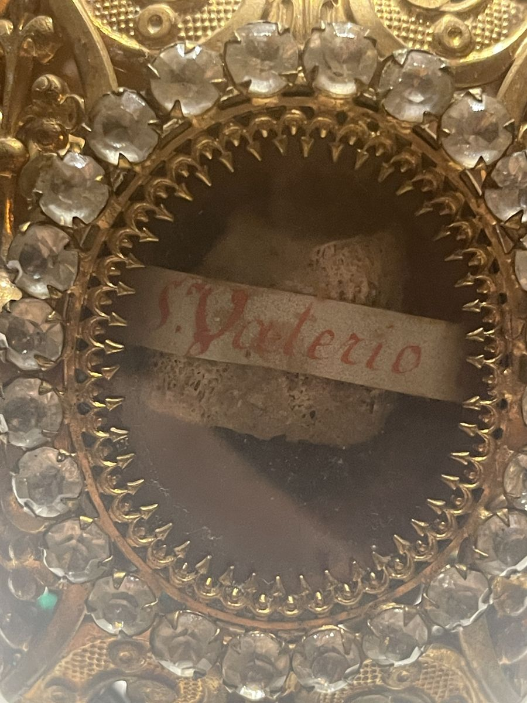
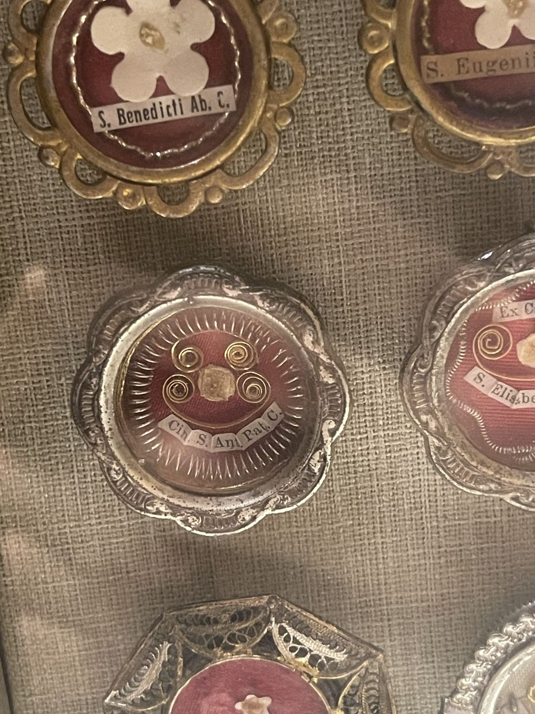

Placeholder photoThe abbey's relics
More than a hundred saints keep us company
Relics of St. Bernard and St. Benedict, of apostles and martyrs, of the first bishops of Trier, of kings and queens, and of saints from our own century, gathered over two hundred years.
What a relic is
Not magic, and not worship
A relic is something left to us by a saint: a fragment of the body (a first-class relic), something the saint used or wore (second class), or a cloth touched to them (third class). The Church honors relics because the saints' bodies were temples of the Holy Spirit and will rise again; she never worships them. Worship belongs to God alone.
Most of ours came with old Latin labels on tiny strips of paper: S. Bernardi Ab. D., "of St. Bernard, Abbot and Doctor". We read every one we could; a few have faded past reading.
The full catalogue, with every label as read and a paragraph on each saint.
Photo to come
All the relics together on the altar, photographed for the abbey.
The reliquaries
14 reliquaries, 122 photographs
The pictures below are working photographs, taken on the Feast of All Saints 2026. New photographs, a wide view and a close-up of each relic, are coming.


Placeholder photo

Placeholder photoOur Lord, Our Lady, apostles and early saints
The velvet case
A case of brown velvet studded with silver beads, holding four thecas
A case of brown velvet set with silver beads, holding four thecas: the tomb of Our Lord and the Holy House of Loreto, the tomb of Our Lady, St. John the Baptist, the apostles, and saints of the early Church.
Ex Sepul. D.N. · Domus Laur. · Ex Sepul. V. M. · S. Joann. Bapt. · S. Petri Ap. …
- The tomb of Our Lord
- The Holy House of Loreto
- The tomb of Our Lady
- St. John the Baptist
- St. Peter
- St. Paul
- St. Philip the Apostle
- St. Joseph
- St. Anne
- St. Alphonsus Liguori
- St. Remigius
- St. Ursula
- St. Francis of Assisi
- St. Anthony of Padua
- St. Roch
- St. Lucy
- St. Agatha


About fifteen relics in one oval
Royal saints and the House of Este
Oval theca in an ornate gold frame
Kings, queens and saints of the House of Este around one oval, perhaps made for or given by that family. The glass is cracked; one label is still unread.
S. Radegundae R. · S. Hermeneg. R. · S. Ferdin. R. · B. Beat. I. Est. …
- St. Radegund
- St. Elizabeth
- St. Hermenegild
- St. Ferdinand III
- St. Matilda
- St. Henry II
- St. Oswald
- St. Contardo d'Este
- Bl. Beatrice I and II d'Este
- St. Francis Xavier
- St. Raymond Nonnatus
- St. Nicholas of Bari



Placeholder photoFirst bishops and martyrs of an old Benedictine city
The relics from Trier
Matching jewelled gilt reliquaries
Two matching reliquaries in the same red hand, "S. Euchario" and "S. Valerio": the first bishops of Trier. With them, the Martyrs of Trier and a relic from the Benedictine Abbey of St. Matthias, where those bishops are buried. They look like one gift from Trier.
S. Valerio · S. Euch[ario] · Oss. Martirum Trevir[ensium] · Abbatia S. Matth[iae]
- St. Eucharius
- St. Valerius
- The Martyrs of Trier


Rhinestones, turquoise and filigree
The jewelled set
Jewelled gilt reliquaries
A set of jewelled gilt reliquaries, all alike, including St. Norbert, St. Gemma, a bone inked "S. … Phili…" and a cloth-wrapped relic whose name is lost.
Gemmae G. · S. … Phili… · S. Norberti
- St. Norbert
- St. Gemma Galgani
- A St. Philip
- An unlabelled relic



Placeholder photoDozens of small thecas, gathered over decades
The linen board
A large board covered in grey linen
A large board covered in grey linen and set with dozens of small thecas. The labels were written over decades, from before 1964 to after 1977: doctors, founders, martyrs, Our Lady's garment, the Holy Nail.
S. Theres. a Iesu · S. Thom. Aq. C. D. · Ex Veste B. M. V. …
- Our Lady's garment
- The Holy Nail
- St. Joachim
- St. Agnes
- St. Benedict
- St. Anthony of Padua
- St. Elizabeth of Hungary
- St. Martin de Porres
- St. Claude de la Colombière
- The Uganda Martyrs
- St. Valentine
- St. Anselm
- St. Thomas Aquinas
- St. Gerard Majella
- St. Charbel
- St. Joseph
- St. Blaise
- St. Simon Stock
- St. Elizabeth Ann Seton
- St. Teresa of Ávila
- St. Maria Goretti
- St. John Vianney
- St. Philip Neri
- St. Catherine Labouré
- St. Francis Xavier
- St. Ursula
- St. John the Baptist
- St. Helena
- St. Dominic
- St. Pius X
- St. Frances Xavier Cabrini
- St. John Neumann
- St. Camillus de Lellis
- St. Francis of Assisi
- St. Augustine
- St. Matthew
- St. Luke
- St. Patrick
- St. Clare
- St. Francis de Sales
- St. Bernadette
- Sts. Jacinta and Francisco Marto


Apostles, founders and doctors
The oval of fifteen
Large oval in a pewter-coloured frame
Fifteen relics in one oval: St. Joseph, the apostles Peter and Paul, and the great founders and doctors.
s. Jos. Sp. V. M. · s. Petri Apos · s. Bernar. Ab. …
- St. Joseph
- St. Peter
- St. Paul
- St. Bonaventure
- St. Bernard
- St. Anthony of Padua
- St. Alphonsus Liguori
- St. Aloysius Gonzaga
- St. Dominic
- St. Maurice
- St. Francis of Assisi
- St. Catherine of Siena
- St. Agnes
- St. Helena
- St. Elizabeth

St. Francis and four of his friars
The Franciscan reliquary
Gothic gilt reliquary
St. Francis with four of his friars. The labels call them all "Blessed", which dates them between 1825 and 1839.
S. Francisci Assisiensis · B. Angeli ab Acri · B. Leonardi a P. M. …
- St. Francis of Assisi
- St. Angelo of Acri
- St. Leonard of Port Maurice
- St. Pacificus of San Severino
- St. Thomas of Cori


Saints of youth and of the sick
The sunburst stands
Gilt sunbursts and silver pendants
Gilt sunbursts and silver pendants: St. Aloysius and St. John Berchmans, patrons of young people, St. Camillus of the sick, and St. Paul of the Cross.
S. Aloisii Gonz. C. · Camilli de Lell. · S. Pauli a Cruce · s. Joan. Berch.
- St. Aloysius Gonzaga
- St. Camillus de Lellis
- St. Paul of the Cross
- St. John Berchmans


Saints of the last two centuries
The white linen case
A case lined in white linen
Saints of the last two centuries: a relic "Ex Corpore" of St. Gemma, St. Pius X, St. Dymphna, St. Catherine Labouré, St. Frances Cabrini and Bl. Columba Marmion.
Ex Corpore Gemmae Galgani · S. Pius Pp. X · Ste C. Labouré …
- St. Gemma Galgani
- St. Pius X
- St. Dymphna
- St. Catherine Labouré
- St. Frances Xavier Cabrini
- Bl. Columba Marmion
- A medal, likely St. Anthony


Each in its own stand
Single reliquaries
Sunbursts, crosses and tabernacles
Each in its own stand: St. Dominic, St. Elizabeth Ann Seton, St. Jude, St. John Bosco, St. Lawrence, St. Sebastian, St. Vincent Ferrer, St. Pier Giorgio Frassati and more.
- St. Dominic
- St. Elizabeth Ann Seton
- Bl. Columba Marmion
- St. Jude Thaddeus
- St. Gabriel of Our Lady of Sorrows
- St. John Bosco
- St. Lawrence
- St. Sebastian
- St. Pius X
- St. Gabriel and St. Gemma
- St. Andrew and St. Martin
- St. Bernard
- St. Conrad of Parzham
- St. Vincent Ferrer
- St. Pier Giorgio Frassati